10 D.C. circuits
Practical circuits, Kirchhoff’s laws and potential dividers
Learning objectives
By the end of this chapter, you should be able to:
- recall and use the circuit symbols shown in the syllabus;
- define and use the electromotive force (e.m.f.) of a source as the energy transferred per unit charge in driving charge around a complete circuit;
- distinguish between e.m.f. and potential difference (p.d.) in terms of energy considerations;
- understand the effect of the internal resistance of a source on the terminal potential difference;
- recall Kirchhoff’s first law (charge conservation) and second law (energy conservation);
- derive and use the formulas for combined resistance in series and in parallel;
- use Kirchhoff’s laws to solve simple circuit problems;
- understand the principle of a potential divider and the potentiometer;
- understand the use of a galvanometer in null methods;
- explain the use of thermistors and LDRs in potential dividers.
10.1 Practical circuits
Electromotive force and potential difference
The electromotive force (e.m.f.) of a source is the energy transferred per unit charge in driving charge around a complete circuit:
\[E=\frac{W}{Q}.\]
The potential difference (p.d.) across a component is the energy transferred (to other forms) per unit charge as charge moves through that component.
Key distinction:
- e.m.f. involves changing other forms of energy (chemical, mechanical) into electrical energy.
- p.d. involves changing electrical energy into other forms (thermal, light, sound).
The e.m.f. is the total energy per unit charge supplied by the source; the p.d. across the external circuit is the energy per unit charge delivered to the external components.
Internal resistance
A real source of e.m.f. has internal resistance \(r\). When a current \(I\) flows, some energy is dissipated inside the source, so the terminal potential difference \(V\) across the source is less than the e.m.f. \(E\):
\[E=V+Ir \qquad \text{or} \qquad V=E-Ir.\]
For a circuit containing a source of e.m.f. \(E\) and internal resistance \(r\) connected to an external resistance \(R\):
\[E=I(R+r).\]
The “lost volts” \(Ir\) increase as the current increases.
Power and energy
The power dissipated in a resistor can be written as
\[P=VI=I^2R=\frac{V^2}{R}.\]
The electrical energy transferred is \(W=VIt\) (or \(W=EQ\) for a source of e.m.f. \(E\)).
10.2 Kirchhoff’s laws
Kirchhoff’s first and second laws
Kirchhoff’s first law: the sum of the currents entering a junction equals the sum of the currents leaving it. This is a consequence of the conservation of charge.
Kirchhoff’s second law: the sum of the e.m.f.s around a closed loop equals the sum of the products of current and resistance (p.d.s) around the loop:
\[\sum E = \sum IR.\]
This is a consequence of the conservation of energy.
Combined resistance
For resistors in series, the same current flows through each resistor and the p.d.s add:
\[R_{\text{total}}=R_1+R_2+R_3+\dots\]
For resistors in parallel, the same p.d. is across each resistor and the currents add:
\[\frac{1}{R_{\text{total}}}=\frac{1}{R_1}+\frac{1}{R_2}+\frac{1}{R_3}+\dots\]
For two resistors in parallel, \(R_{\text{total}}=\dfrac{R_1R_2}{R_1+R_2}\).
10.3 Potential dividers
The potential divider
A potential divider uses two resistors in series to produce a fraction of the supply p.d. across one of them:
\[V_{\text{out}}=V_{\text{in}}\times\frac{R_2}{R_1+R_2}.\]
The output p.d. can be varied by using a variable resistor or a sliding contact (potentiometer).
The potentiometer
A potentiometer is a wire or resistor with a sliding contact, used to compare potential differences or e.m.f.s.
In a null method, the galvanometer reading is reduced to zero. At balance, the p.d. across the length of wire \(l\) equals the unknown e.m.f.:
\[\frac{E_1}{E_2}=\frac{l_1}{l_2}.\]
A galvanometer is used in null methods by adjusting the contact until there is no deflection (no current / no p.d. across it).
Thermistors and LDRs
A thermistor has a resistance that decreases as temperature increases. In a potential divider, an increase in temperature decreases the thermistor’s p.d. and increases the p.d. across the fixed resistor.
An LDR (light-dependent resistor) has a resistance that decreases as light intensity increases. In a potential divider, the output p.d. therefore depends on the light intensity.
These devices are used in temperature sensors, light sensors, alarms and automatic switches.
Multiple Choice Questions
10.1 DC Practical Circuits & Kirchhoff’s Laws - Easy
Example 1 · 10.1 MC Easy Q2
Which symbol represents a component whose resistance is designed to change with temperature?
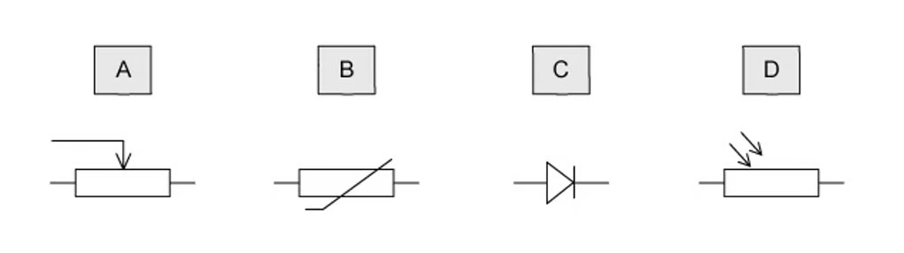
Show answer and explanation
Answer: B. A component whose resistance changes with temperature is a thermistor; its symbol is option B. Option A is a potentiometer, C is a diode and D is an LDR.Example 2 · 10.1 MC Easy Q3
In the circuit shown, a light-dependent resistor (LDR) is connected to two resistors \(R_1\) and \(R_2\).
The potential difference (p.d.) across \(R_1\) is \(V_1\) and the p.d. across \(R_2\) is \(V_2\). The current in the circuit is \(I\).
Which statement about this circuit is correct?
A. the current \(I\) increases when the light intensity decreases
B. the LDR is an ohmic conductor
C. the p.d. \(V_2\) increases when the light intensity decreases
D. the ratio \(\dfrac{V_1}{V_2}\) is independent of light intensity
Show answer and explanation
Answer: D. The resistance of an LDR decreases as light intensity increases. In a series circuit the same current flows through every component, and \(\dfrac{V_1}{V_2}=\dfrac{R_1}{R_2}\), which depends only on the resistances, not on the current. So the ratio is independent of light intensity.Example 3 · 10.1 MC Easy Q7
A cell is connected to a resistor.
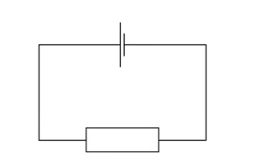
At any given moment, the potential difference across the cell is less than its electromotive force.
Which statement explains this?
A. the cell is continually discharging
B. the connecting wire has some resistance
C. energy is needed to drive charge through the cell
D. power is used when there is a current in the resistor
Show answer and explanation
Answer: C. Most cells have some internal resistance, so energy is needed to drive charge through the cell. This energy is lost inside the cell, making the terminal p.d. lower than the e.m.f.10.1 DC Practical Circuits & Kirchhoff’s Laws - Medium
Example 4 · 10.1 MC Medium Q1
A cell of e.m.f. 2.0 V and negligible internal resistance is connected to a network of resistors as shown.
What is the current \(I\)?
A. 0.25 A
B. 0.33 A
C. 0.50 A
D. 1.5 A
Show answer and explanation
Answer: A. The two 4.0 Ω resistors in parallel give 2.0 Ω, and this is in series with a 2.0 Ω resistor to give 4.0 Ω in one branch, which is in parallel with another 2.0 Ω. The total resistance is \(\frac{4}{3}\ \Omega\), so the current from the cell is \(I=E/R_{\text{total}}=2.0/(4/3)=1.5\ \mathrm{A}\). This 1.5 A splits equally between the two equal branches, and \(I\) (through one 2.0 Ω resistor) \(=0.25\ \mathrm{A}\).Example 5 · 10.1 MC Medium Q3
The diagram shows part of a current-carrying circuit. The ammeter has negligible resistance.
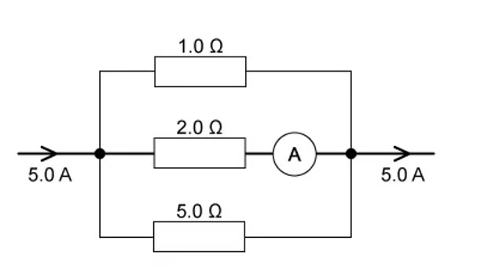
What is the reading on the ammeter?
A. 0.7 A
B. 1.3 A
C. 1.5 A
D. 1.7 A
Show answer and explanation
Answer: C. The three resistors are in parallel: \(\frac{1}{R}=\frac{1}{1}+\frac{1}{2}+\frac{1}{5}=1.7\), so \(R=0.588\ \Omega\). With 5.0 A flowing, the p.d. across the branches is \(V=IR=5.0\times0.588=2.94\ \mathrm{V}\). Since the resistors are in parallel, the p.d. across each branch is the same, so the current through the 2.0 Ω branch is \(I=V/R=2.94/2=1.5\ \mathrm{A}\).Example 6 · 10.1 MC Medium Q4
In the circuit shown, all the resistors are identical.
The reading on voltmeter \(V_1\) is 8.0 V and the reading on voltmeter \(V_2\) is 1.0 V.
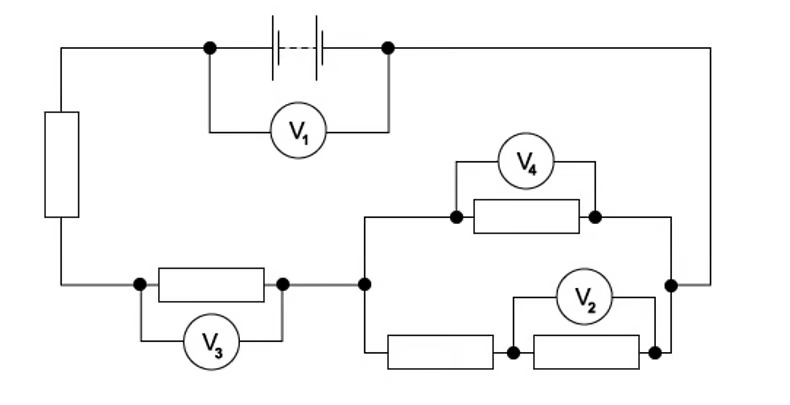
What are the readings on the other voltmeters?
| Reading on voltmeter \(V_4\) / V | Reading on voltmeter \(V_3\) / V | |
|---|---|---|
| A | 1.5 | 1.0 |
| B | 3.0 | 2.0 |
| C | 4.5 | 3.0 |
| D | 6.0 | 4.0 |
Show answer and explanation
Answer: B. With identical resistors, the p.d. across the resistor left of \(V_2\) is also 1.0 V, so the lower branch of the parallel combination carries 2.0 V. By Kirchhoff’s second law, the sum of p.d.s around the loop is the e.m.f.: \(V_4+V_4+2.0=8.0\), giving \(V_4=3.0\ \mathrm{V}\) and \(V_3=2.0\ \mathrm{V}\).Example 7 · 10.1 MC Medium Q6
The diagram shows a circuit with four voltmeter readings \(V\), \(V_1\), \(V_2\) and \(V_3\).
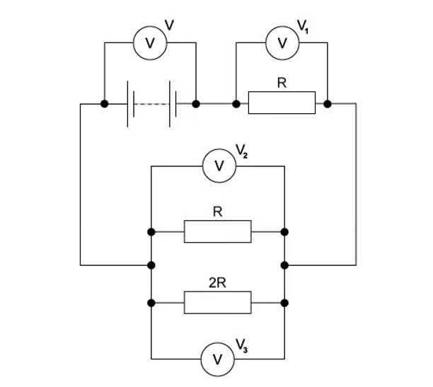
Which equation relating the voltmeter readings must be true?
A. \(V=V_1+V_2+V_3\)
B. \(V+V_1=V_2+V_3\)
C. \(V_3=2(V_2)\)
D. \(V-V_1=V_3\)
Show answer and explanation
Answer: D. The circuit forms two loops. Applying Kirchhoff’s second law to each loop gives \(V=V_1+V_2\) and \(V=V_2+V_3\), so \(V-V_1=V_3\).Example 8 · 10.1 MC Medium Q7
A simple circuit is formed by connecting a resistor of resistance \(R\) between the terminals of a battery of electromotive force (e.m.f.) 9.0 V and constant internal resistance \(r\).
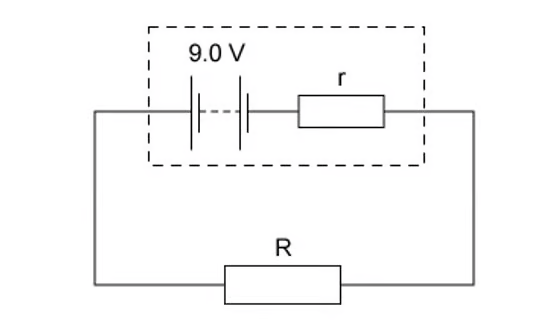
A charge of 6.0 C flows through the resistor in a time of 2.0 minutes, causing it to dissipate 48 J of thermal energy.
What is the internal resistance \(r\) of the battery?
A. 0.17 Ω
B. 0.33 Ω
C. 20 Ω
D. 160 Ω
Show answer and explanation
Answer: C. The current is \(I=Q/t=6.0/120=0.05\ \mathrm{A}\). The power dissipated in \(R\) is \(P=48/120=0.4\ \mathrm{W}=I^2R\), so \(R=0.4/0.05^2=160\ \Omega\). From \(E=I(R+r)\), \(9.0=0.05(160+r)\), so \(r=20\ \Omega\).Example 9 · 10.1 MC Medium Q8
When four identical resistors are connected as shown in diagram 1, the ammeter reads 1.0 A, and the voltmeter reads zero.
The resistors and meters are reconnected to the supply, as shown in diagram 2.
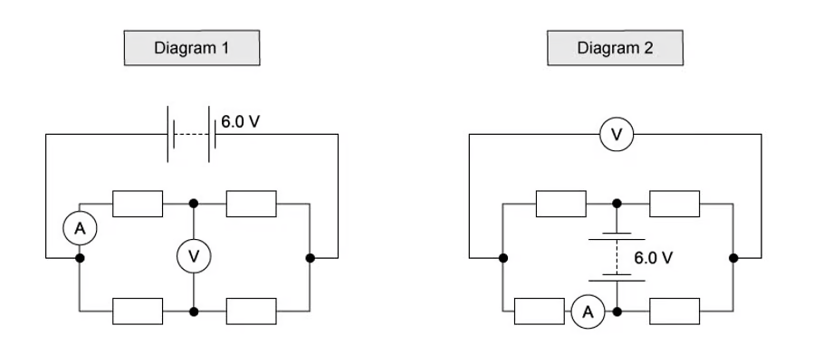
What are the meter readings in diagram 2?
| Voltmeter reading / V | Ammeter reading / A | |
|---|---|---|
| A | 1.0 | 1.0 |
| B | 3.0 | 0.5 |
| C | 3.0 | 1.0 |
| D | 6.0 | 0.5 |
Show answer and explanation
Answer: A. In diagram 1 the voltmeter reads zero because both its junctions are at the same potential; the ammeter reads 1.0 A, so the total current is 2.0 A. In diagram 2 the resistors are arranged so that the voltmeter reads 1.0 V and the ammeter still reads 1.0 A (the p.d. and current pattern is the same as diagram 1).Example 10 · 10.1 MC Medium Q10
In the circuit shown, all the resistors are identical and all the ammeters have negligible resistance.
The reading on ammeter \(A_1\) is 0.6 A.
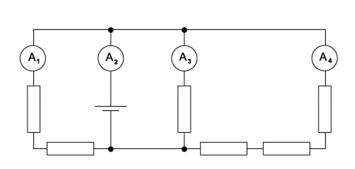
What are the readings on the other ammeters?
| \(A_2\) / A | \(A_3\) / A | \(A_4\) / A | |
|---|---|---|---|
| A | 1.0 | 0.3 | 0.1 |
| B | 1.4 | 0.6 | 0.2 |
| C | 1.8 | 0.9 | 0.3 |
| D | 2.2 | 1.2 | 0.4 |
Show answer and explanation
Answer: D. Current flows from the positive terminal of the battery, so the current in \(A_2\) has the highest value. From the resistor arrangement, \(A_2=2.2\ \mathrm{A}\), \(A_3=1.2\ \mathrm{A}\) and \(A_4=0.4\ \mathrm{A}\).10.1 DC Practical Circuits & Kirchhoff’s Laws - Hard
Example 11 · 10.1 MC Hard Q1
A power supply of electromotive force (e.m.f.) 12 V and internal resistance 2 Ω is connected in series with a load resistor. The value of the load resistor is varied from 0.5 Ω to 4 Ω.
Which graph shows how the power \(P\) dissipated in the load resistor varies with the resistance of the load resistor?
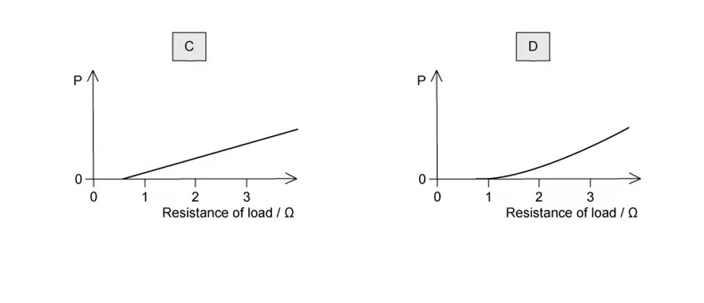
Show answer and explanation
Answer: A. The power in the load is \(P=I^2R=E^2R/(R+r)^2\). Maximum power is transferred when \(R=r=2\ \Omega\), so the graph rises to a peak at 2 Ω and then falls – graph A.Example 12 · 10.1 MC Hard Q2
Six resistors, each of resistance 5 Ω, are connected to a 2 V cell of negligible internal resistance.
What is the potential difference between terminals X and Y?
Show answer and explanation
Answer: A. The network is a balanced arrangement in which the potential at X equals the potential at Y, so the p.d. between X and Y is zero.Example 13 · 10.1 MC Hard Q6
A p.d. of 12 V is connected between P and Q.
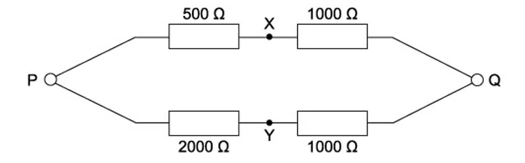
What is the p.d. between X and Y?
A. 0 V
B. 4 V
C. 6 V
D. 8 V
Show answer and explanation
Answer: B. The p.d. across the 500 Ω resistor is \(12\times\frac{500}{500+1000}=4\ \mathrm{V}\) and the p.d. across the 2000 Ω resistor is \(12\times\frac{2000}{2000+1000}=8\ \mathrm{V}\). The p.d. between X and Y is the difference: \(8-4=4\ \mathrm{V}\).Example 14 · 10.1 MC Hard Q9
A 20 V d.c. supply is connected to a circuit consisting of five resistors L, M, N, P and Q.
There is a potential drop of 7 V across L and a further 4 V potential drop across N.
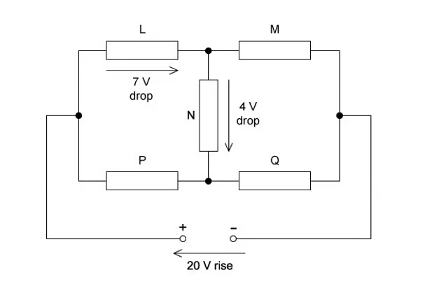
What are the potential drops across M, P and Q?
| M / V | P / V | Q / V | |
|---|---|---|---|
| A | 9 | 7 | 3 |
| B | 13 | 7 | 13 |
| C | 13 | 11 | 9 |
| D | 7 | 3 | 7 |
Show answer and explanation
Answer: C. Around loop 1, the 7 V drop across L means a 13 V drop across M (20 − 7 = 13 V). Around loop 2, the p.d. between P and Q is 13 V − 4 V = 9 V, so the drop across Q is 9 V and the drop across P is 20 − 9 = 11 V.Example 15 · 10.1 MC Hard Q10
The diagram shows the electric motor for a garden pump connected to a 24 V power supply by an insulated two-core cable.
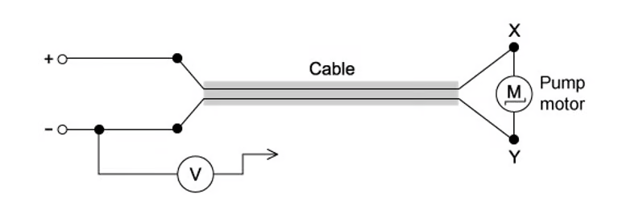
The motor does not work, so to find the fault, the negative terminal of a voltmeter is connected to the negative terminal of the power supply, and its other end is connected in turn to terminals X and Y at the motor.
Which row represents two readings and a correct conclusion?
| Reading at X / V | Reading at Y / V | Conclusion | |
|---|---|---|---|
| A | 24 | 0 | break in positive wire of cable |
| B | 24 | 12 | break in negative wire of cable |
| C | 24 | 24 | break in connection within the motor |
| D | 24 | 24 | break in negative wire of cable |
Show answer and explanation
Answer: D. X is connected to the positive terminal, so the reading at X is 24 V, meaning there is no break in the positive wire. If the negative wire is broken, no current flows and Y is also at 24 V (same potential as X), so the reading at Y is 24 V.10.2 DC Potential Dividers - Easy
Example 16 · 10.2 MC Easy Q1
A potential divider consists of a fixed resistor R and a light-dependent resistor (LDR).
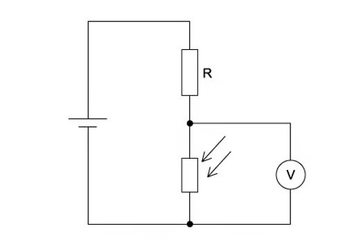
What happens to the voltmeter reading, and why does it happen, when the intensity of light on the LDR increases?
A. The voltmeter reading decreases because the LDR resistance decreases
B. The voltmeter reading decreases because the LDR resistance increases
C. The voltmeter reading increases because the LDR resistance decreases
D. The voltmeter reading increases because the LDR resistance increases
Show answer and explanation
Answer: A. The resistance of the LDR decreases as light intensity increases. From \(V=IR\), the potential difference across the LDR also decreases, so the voltmeter reading decreases.Example 17 · 10.2 MC Easy Q2
The diagram shows a potentiometer circuit.
The contact T is placed on the wire and moved along the wire until the galvanometer reading is zero. The length XT is then noted.
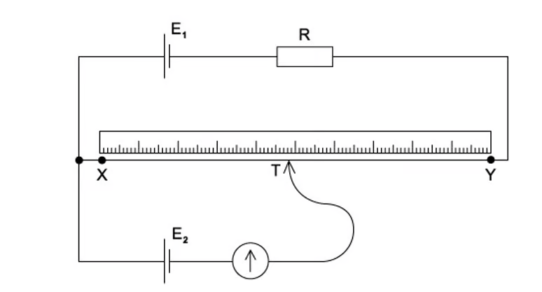
In order to calculate the potential difference per unit length of the wire XY, which value must also be known?
A. the e.m.f. of the cell \(E_1\)
B. the e.m.f. of the cell \(E_2\)
C. the resistance of resistor R
D. the resistance of the wire XY
Show answer and explanation
Answer: B. At balance, the p.d. across XT equals the e.m.f. of the cell \(E_2\) connected to the galvanometer. To find the p.d. per unit length of the wire, we need the e.m.f. of \(E_2\).Example 18 · 10.2 MC Easy Q5
The diagram shows a potential divider circuit designed to provide a variable output p.d.
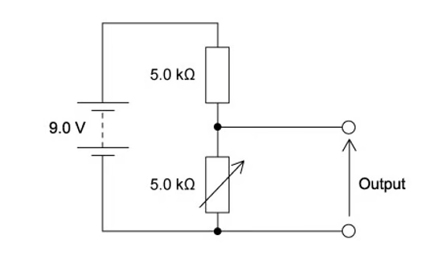
Which gives the available range of output p.d.?
| Maximum output | Minimum output | |
|---|---|---|
| A | 3.0 V | 0 |
| B | 4.5 V | 0 |
| C | 9.0 V | 0 |
| D | 9.0 V | 4.5 V |
Show answer and explanation
Answer: B. With two equal 5.0 kΩ resistors across 9.0 V, the output can be varied from 0 V to \(9.0\times\frac{5.0}{5.0+5.0}=4.5\ \mathrm{V}\).Example 19 · 10.2 MC Easy Q7
In the circuit shown, the 6.0 V battery has negligible internal resistance. Resistors \(R_1\) and \(R_2\) and the voltmeter have resistance 100 kΩ.
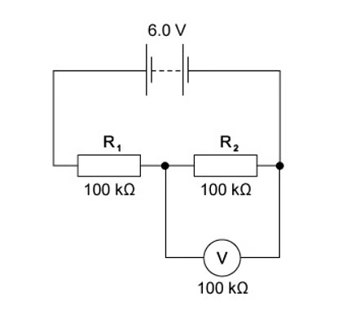
What is the current in the resistor \(R_2\)?
A. 20 μA
B. 30 μA
C. 40 μA
D. 60 μA
Show answer and explanation
Answer: A. \(R_2\) and the voltmeter (both 100 kΩ) are in parallel, giving 50 kΩ, which is in series with \(R_1\) (100 kΩ), so the total resistance is 150 kΩ. The total current is \(I=6.0/150000=40\ \mu\mathrm{A}\). This splits equally at the junction, so the current in \(R_2\) is 20 μA.Example 20 · 10.2 MC Easy Q9
The circuit is designed to trigger an alarm system when the input voltage exceeds some preset value. It does this by comparing \(V_{\text{out}}\) with a fixed reference voltage, which is set at 4.8 V.
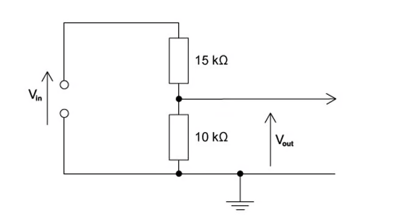
\(V_{\text{out}}\) is equal to 4.8 V.
What is the input voltage \(V_{\text{in}}\)?
A. 4.8 V
B. 7.2 V
C. 9.6 V
D. 12 V
Show answer and explanation
Answer: D. Using the potential divider equation, \(V_{\text{out}}=V_{\text{in}}\frac{R_2}{R_1+R_2}\) with \(R_1=15\ \mathrm{k\Omega}\) and \(R_2=10\ \mathrm{k\Omega}\): \(4.8=V_{\text{in}}\times\frac{10}{25}\), so \(V_{\text{in}}=12\ \mathrm{V}\).Structured Questions
10.1 DC Practical Circuits & Kirchhoff’s Laws - Easy
Example 1 · 10.1 SQ Easy Q1
Three resistors of resistances \(R_1\), \(R_2\) and \(R_3\) are connected as shown in Fig. 1.1.
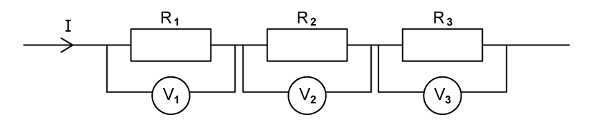
The potential differences across the resistors are \(V_1\), \(V_2\) and \(V_3\). The current in the combination of resistors is \(I\).
(a) Show that the total resistance \(R\) of the combination is given by the equation
\[R=R_1+R_2+R_3.\]
[3 marks]
Three resistors are placed in a circuit with a cell of 10 V and negligible internal resistance and two switches \(S_1\) and \(S_2\). This is shown in Fig. 1.1.
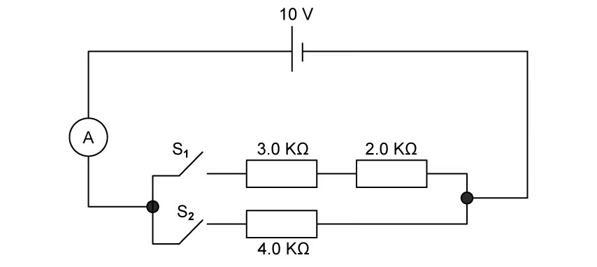
(b) Complete Table 1.1.
| Position of switches | Total resistance / kΩ | |
|---|---|---|
| \(S_1\) | \(S_2\) | |
| open | closed | |
| closed | open | |
| closed | closed |
[3 marks]
The cell has an e.m.f. of 10 V and negligible internal resistance.
(c) Calculate the current from the cell when
(i) switch \(S_1\) is closed; [1]
(ii) both \(S_1\) and \(S_2\) are closed. [1]
[2 marks]
(d) Using your answers in part (c), determine the current from the cell if just switch \(S_2\) is closed. [3 marks]
Show mark scheme / model answer
- (a) The total p.d. \(V\) is the sum of the p.d.s across each resistor: \(V=V_1+V_2+V_3\).
[1]Using Ohm’s law: \(IR=IR_1+IR_2+IR_3\).[1]Dividing by \(I\): \(R=R_1+R_2+R_3\).[1] - (b) open/closed: 4.0 kΩ;
[1]closed/open: 5.0 kΩ;[1]closed/closed: 2.2 kΩ.[1] - (c)(i) With only \(S_1\) closed, \(R=5.0\ \mathrm{k\Omega}\), so \(I=V/R=10/5000=2.0\times10^{-3}\ \mathrm{A}\) (2 mA).
[1] - (c)(ii) With both switches closed, \(R=2.2\ \mathrm{k\Omega}\), so \(I=10/2200=4.5\times10^{-3}\ \mathrm{A}\) (4.5 mA).
[1] - (d) By Kirchhoff’s first law, the total current equals the sum of the branch currents: \(I=I_1+I_2\).
[1]\(I_2=I-I_1=(4.5-2.0)\times10^{-3}\).[1]\(I_2=2.5\times10^{-3}\ \mathrm{A}\) (2.5 mA).[1]
[Total: 11 marks]
Example 2 · 10.1 SQ Easy Q2
(a) Explain why the electromotive force (e.m.f.) of a cell with internal resistance may be more than the terminal potential difference (p.d.) of the cell. [2 marks]
(b) Compare the definitions of e.m.f. and p.d. [3 marks]
(c) For a cell, explain the term internal resistance. [1 mark]
A battery of e.m.f. 1508 V and internal resistance \(r\) is connected to a resistor A, as shown in Fig. 1.1.
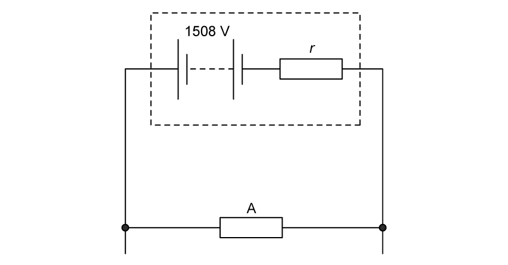
The current in resistor A is 400 mA and the power dissipated by it is 600 W.
(d) Calculate \(r\) of the battery. [3 marks]
Show mark scheme / model answer
- (a) There are lost volts within the cell, or energy is used / spent on the internal resistance.
[1]This happens when the cell supplies a current.[1] - (b) E.m.f. is the transfer of chemical energy into electrical energy.
[1]p.d. is the transfer of electrical energy into other (thermal) forms.[1]Both are energy per unit charge.[1] - (c) Internal resistance is the resistance of a cell causing a loss of voltage / energy loss.
[1] - (d) \(P=VI\), so \(V=P/I=600/0.4=1500\ \mathrm{V}\).
[1]From \(E=V+Ir\): \(r=(E-V)/I\).[1]\(r=(1508-1500)/0.4=20\ \Omega\).[1]
[Total: 9 marks]
Example 3 · 10.1 SQ Easy Q3
(a) State Kirchhoff’s first law. [1]
(ii) State the quantity that is conserved by this law. [1]
[2 marks]
(b) State Kirchhoff’s second law. [1]
(ii) State the quantity that is conserved by this law. [1]
[2 marks]
Fig. 1.1 shows a list of circuit components.
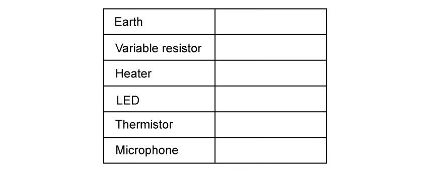
(c) In the right-hand column, sketch the circuit symbol for the component in the left-hand column of Fig. 1.1. [6 marks]
Two cells of e.m.f. \(E_1\) and \(E_2\) of negligible internal resistance are connected to resistors R in a circuit shown in Fig. 1.2.
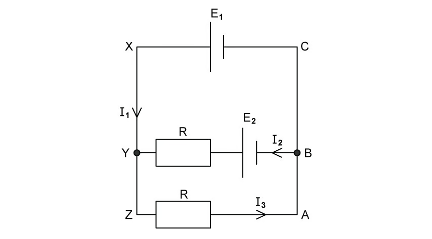
(d) Use Kirchhoff’s laws to state the relation between
(i) \(I_1\), \(I_2\) and \(I_3\); [1]
(ii) \(E_1\), R, \(I_3\) and \(I_1\) in loop YZABY. [1]
[2 marks]
Show mark scheme / model answer
- (a)(i) The sum of the currents into a junction equals the sum of the currents out of the junction.
[1] - (a)(ii) Charge is conserved.
[1] - (b)(i) The sum of the e.m.f.s around a loop equals the sum of the p.d.s around the loop.
[1] - (b)(ii) Energy is conserved.
[1] - (c) One mark for each correct circuit symbol (Earth, variable resistor, heater, LED, thermistor, microphone).
[6] - (d)(i) \(I_1+I_2=I_3\).
[1] - (d)(ii) \(E_1=I_3R+I_1R\).
[1]
[Total: 12 marks]
10.1 DC Practical Circuits & Kirchhoff’s Laws - Medium
Example 4 · 10.1 SQ Medium Q1
Three resistors of resistances \(R_1\), \(R_2\) and \(R_3\) are connected as shown in Fig. 1.1.
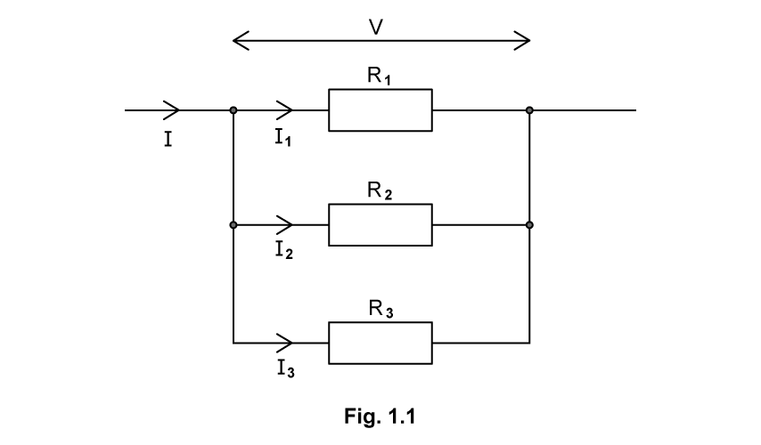
The currents in the resistors are \(I_1\), \(I_2\) and \(I_3\). The total current in the combination of resistors is \(I\) and the potential difference across the combination is \(V\).
(a) Show that the total resistance \(R\) of the combination is given by the equation
\[\frac{1}{R}=\frac{1}{R_1}+\frac{1}{R_2}+\frac{1}{R_3}.\]
[2 marks]
A battery of electromotive force (e.m.f.) 6.0 V and internal resistance \(r\) is connected to an external resistor of resistance 12 Ω and a thermistor, as shown in Fig. 1.2.
(b) The combined resistance of the external resistor and thermistor X connected in parallel is 4.8 Ω.
Calculate the resistance of X.
resistance = ____________ [3]
(c) A charge of 2.5 kC passes through the battery.
Calculate:
(i) the total energy transferred by the battery;
energy = ____________ [2]
(ii) the number of electrons that pass through the battery.
number = ____________ [1]
[3 marks]
(d) The temperature of the thermistor is now decreased.
State and explain the effect, if any, of this temperature change on the total power produced by the battery. [3 marks]
Show mark scheme / model answer
- (a) The total current is the sum of the currents: \(I=I_1+I_2+I_3\).
[1]Using \(I=V/R\): \(\frac{V}{R}=\frac{V}{R_1}+\frac{V}{R_2}+\frac{V}{R_3}\), so \(\frac{1}{R}=\frac{1}{R_1}+\frac{1}{R_2}+\frac{1}{R_3}\).[1] - (b) \(\frac{1}{4.8}=\frac{1}{12}+\frac{1}{R_X}\).
[1]\(\frac{1}{R_X}=\frac{1}{4.8}-\frac{1}{12}=\frac{1}{8}\).[1]\(R_X=8\ \Omega\).[1] - (c)(i) \(W=VQ=6\times2.5\times10^3\).
[1]\(W=1.5\times10^4\ \mathrm{J}\). `[1]$ - (c)(ii) Number of electrons \(=Q/e=2.5\times10^3/(1.6\times10^{-19})\).
[1]\(=1.6\times10^{22}\).[1] - (d) When the temperature decreases, the thermistor resistance increases.
[1]The total circuit resistance increases, so the total current decreases.[1]Since \(P=VI\) and \(V\) is constant, the total power decreases.[1]
[Total: 11 marks]
Example 5 · 10.1 SQ Medium Q2
(a) Explain why the terminal potential difference (p.d.) of a cell with internal resistance may differ from the electromotive force (e.m.f.) of the cell. [3 marks]
A battery of e.m.f. 6.2 V and internal resistance 7.0 Ω is connected in series with a resistor of resistance 11 Ω, as shown in Fig. 1.1.
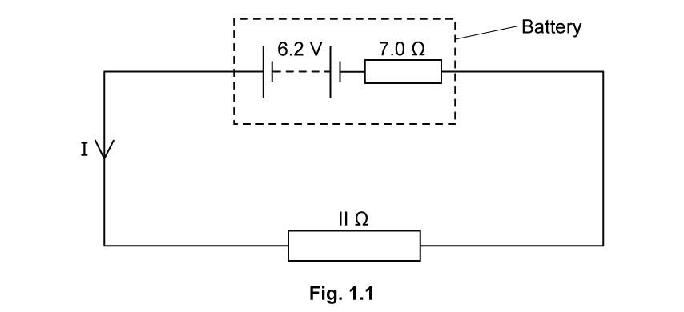
The current \(I\) flows through the circuit.
(b) Determine
(i) the current \(I\) in the circuit; [2]
(ii) the terminal p.d. of the battery. [2]
[5 marks]
(c) A second identical resistor is added in series with the resistor in Fig. 1.1.
Quantitatively explain the change in the current in the circuit. [2 marks]
(d) The second 11 Ω resistor is now connected in parallel to the initial 11 Ω resistor in Fig. 1.1.
Qualitatively explain the effect this has on the battery. [3 marks]
Show mark scheme / model answer
- (a) The terminal p.d. is less than the e.m.f.
[1]because there are lost volts, or energy is used / dissipated within the cell.[1]This is due to the internal resistance when a current is supplied.[1] - (b)(i) \(E=I(R+r)\).
[1]\(I=6.2/(11+7)=0.34\ \mathrm{A}\).[1] - (b)(ii) \(V=IR=0.34\times11=3.7\ \mathrm{V}\).
[2] - (c) The current is halved, decreasing from 0.34 A to 0.17 A.
[1]because the resistance in the circuit has doubled from 11 Ω to 22 Ω.[1] - (d) The battery heats up / gets hotter.
[1]because the circuit resistance decreases.[1]so the current increases.[1]
[Total: 13 marks]
10.2 DC Potential Dividers - Easy
Example 6 · 10.2 SQ Easy Q1
(a) Sketch the circuit symbols for
(i) the potentiometer; [1]
(ii) the galvanometer. [1]
[2 marks]
Fig. 1.1 shows a circuit with a potentiometer.
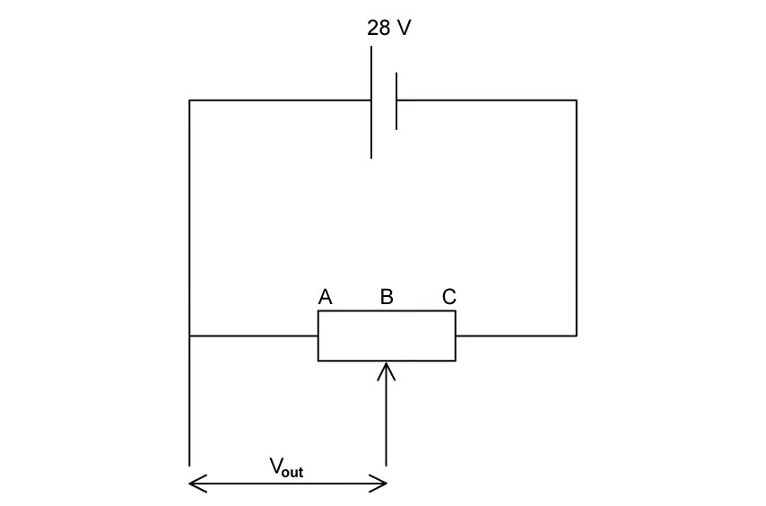
Fixed ends AC are connected across the battery so that there is a full battery voltage across the whole resistor.
(b) State the voltage output, \(V_{\text{out}}\), when the sliding contact is at
(i) A; [1]
(ii) the midpoint B; [1]
(iii) C. [1]
[3 marks]
The resistor is now replaced with a uniform resistance wire connected between ends AC, as shown in Fig. 1.2a. The 28 V cell is replaced with a cell of unknown e.m.f.
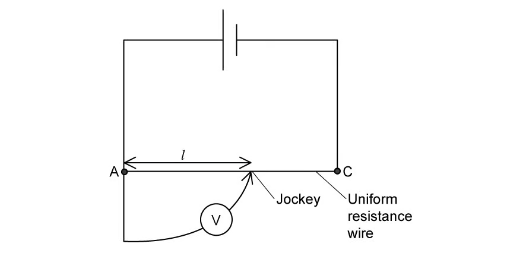
(c) Sketch a graph of Fig. 1.2b to show the voltmeter reading \(V\) against length \(l\) as the jockey is moved from point A to point C.
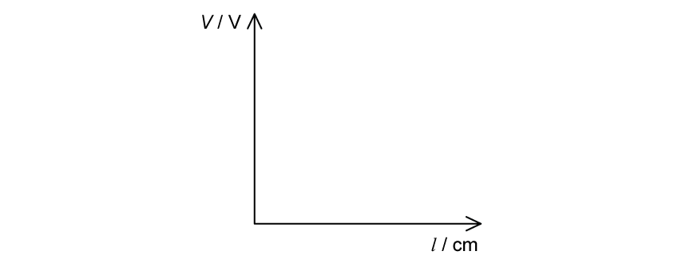
[2 marks]
A potentiometer can be used to compare e.m.f.s of cells or potential differences.
A test cell is added to the circuit in Fig. 1.2a. A student sets up the circuit shown in Fig. 1.3.
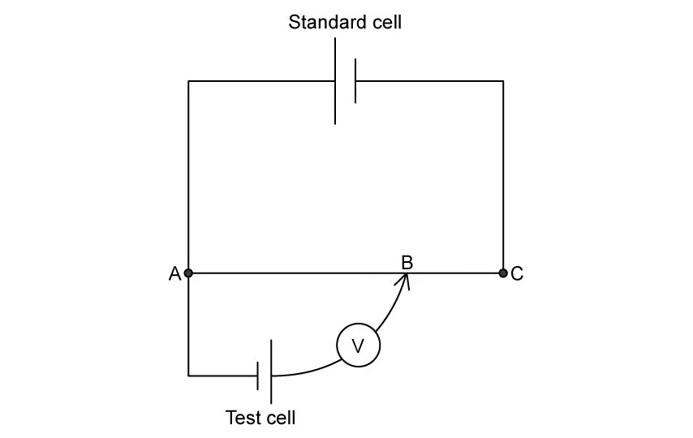
(d) State why the student will not be able to find a point where the current is zero. [1]
(ii) The student fixes the issue from part (i) and achieves a balance point when the length of the wire AB is 25.6 cm.
They repeat the experiment with a standard cell of e.m.f. 1.545 V. The balance point using this cell is 37.2 cm.
Calculate the e.m.f. of the test cell. [2]
[4 marks]
Show mark scheme / model answer
- (a)(i) Correct circuit symbol for a potentiometer (resistor with sliding arrow).
[1] - (a)(ii) Correct circuit symbol for a galvanometer.
[1] - (b)(i) 0 V.
[1] - (b)(ii) 14 V.
[1] - (b)(iii) 28 V.
[1] - (c) Straight line with a positive gradient through the origin.
[2] - (d)(i) The test cell is the wrong way round / the test cell needs to be reversed.
[1] - (d)(ii) \(\frac{E_{\text{test}}}{E_{\text{standard}}}=\frac{l_1}{l_2}\).
[1]\(E_{\text{test}}=1.545\times\frac{25.6}{37.2}=1.06\ \mathrm{V}\).[1]
[Total: 11 marks]
Example 7 · 10.2 SQ Easy Q2
Fig. 1.1 shows a potential divider circuit containing a fixed resistor and thermistor.
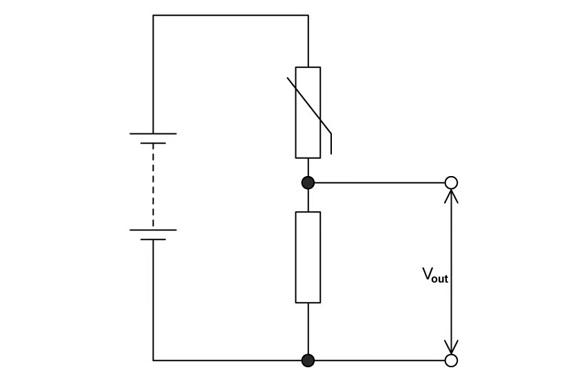
(a) Explain what happens as the temperature increases. [2 marks]
The thermistor is now replaced with an LDR and the output voltage is now taken from the LDR, as shown in Fig. 1.2a.
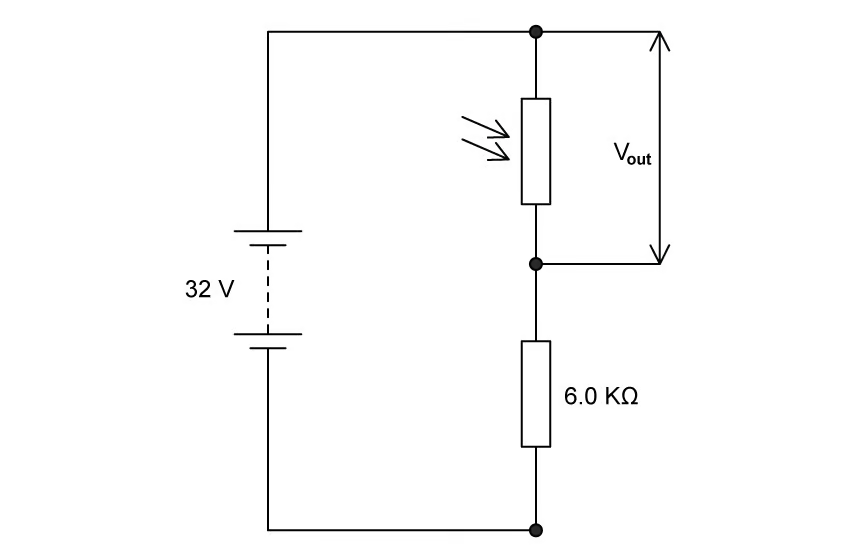
(b) Using Fig. 1.2b, determine the resistance of the LDR when the light intensity is 120 lux.
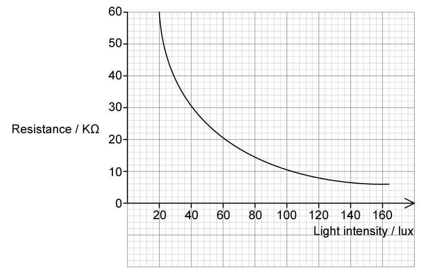
resistance = ____________ [1 mark]
(c) Using your answer to part (b), calculate \(V_{\text{out}}\) when the light intensity is 120 lux. [3 marks]
(d) Using your answer to part (c), determine the voltage across the 6.0 kΩ resistor at a light intensity of 120 lux. [2 marks]
Show mark scheme / model answer
- (a) The resistance of the thermistor decreases.
[1]So \(V_{\text{out}}\) increases.[1] - (b) 8 kΩ (read from the graph at 120 lux).
[1] - (c) \(V_{\text{out}}=V_{\text{in}}\frac{R_{\text{LDR}}}{R_1+R_{\text{LDR}}}\).
[1]\(V_{\text{out}}=32\times\frac{8.0}{6.0+8.0}\).[1]\(V_{\text{out}}=18\ \mathrm{V}\).[1] - (d) \(V_{6.0}=V_{\text{in}}-V_{\text{out}}=32-18\).
[1]\(V_{6.0}=14\ \mathrm{V}\).[1]
[Total: 8 marks]
Example 8 · 10.2 SQ Easy Q3
A variable resistor is used to control the circuit shown in Fig. 1.1.
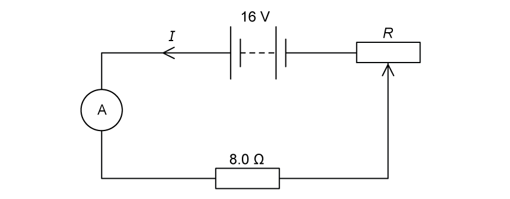
The variable resistor is connected in series with a 16 V power supply of negligible internal resistance, an ammeter and an 8.0 Ω resistor.
The resistance R of the variable resistor can be varied between 0 to 12 Ω.
(a) Calculate
(i) the minimum possible current; [2]
(ii) the maximum possible current. [2]
[4 marks]
(b) On Fig. 1.2, sketch the variation with R of current \(I\) in the circuit.
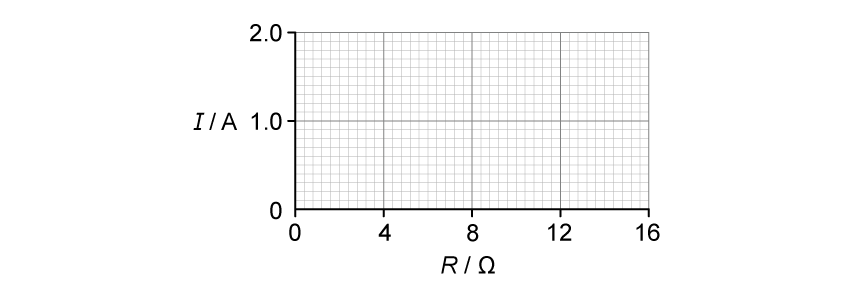
[2 marks]
(c) Galvanometers are used in null methods.
Explain how a galvanometer is used in null methods. [2 marks]
Show mark scheme / model answer
- (a)(i) Minimum current occurs with maximum resistance: \(R_{\max}=8+12=20\ \Omega\).
[1]\(I_{\min}=16/20=0.8\ \mathrm{A}\).[1] - (a)(ii) Maximum current occurs with minimum resistance: \(R_{\min}=8\ \Omega\).
[1]\(I_{\max}=16/8=2.0\ \mathrm{A}\).[1] - (b) The graph starts at \((0,\ 2.0)\) and ends at \((16,\ 0.8)\) with a curve of decreasing gradient.
[2] - (c) The galvanometer has no deflection.
[1]when there is no current flow / no potential difference.[1]
[Total: 8 marks]
10.2 DC Potential Dividers - Medium
Example 9 · 10.2 SQ Medium Q1
A battery is connected in series with resistors P and Q, as shown in Fig. 1.1.
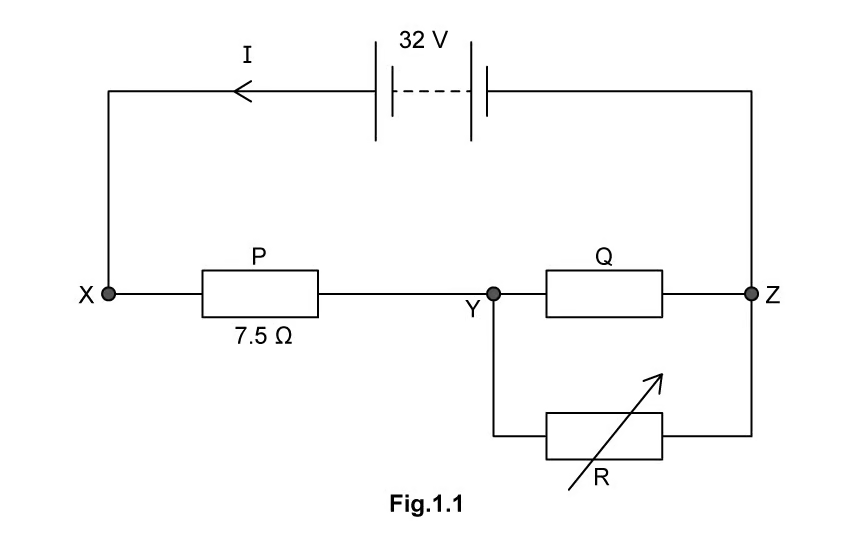
The resistance of P is 7.5 Ω. The resistance of Q is constant. A variable resistor of resistance R is connected in parallel with Q.
The current \(I\) from the battery is changed by varying R from 5 to 20 Ω. The variation with R of I is shown in Fig. 1.2.
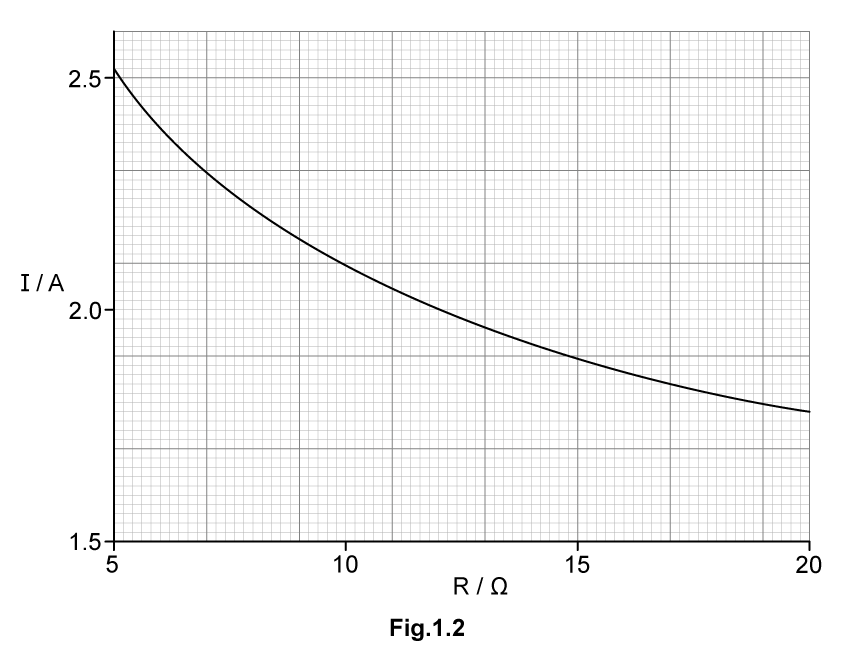
(a) Use Fig. 1.2 to state and explain the variation of the p.d. across resistor P as R is decreased. Numerical values are not required. [2 marks]
(b) For R = 7.0 Ω, calculate the p.d. between points Y and Z. [2 marks]
(c) Show that the resistance of Q is 9.5 Ω. [3 marks]
(d) State and explain qualitatively how the power provided by the battery changes as the resistance R is decreased. [1 mark]
Show mark scheme / model answer
- (a) As R decreases, the current \(I\) increases.
[1]so the p.d. across P (given by \(V_P=IR_P\)) increases.[1] - (b) From the graph, \(I=2.3\ \mathrm{A}\) at R = 7.0 Ω.
[1]P.d. across YZ \(=32-(2.3\times7.5)=14.75\approx15\ \mathrm{V}\).[1] - (c) Resistance of the Q–R parallel combination \(R_{QR}=15/2.3=6.52\ \Omega\).
[1]\(\frac{1}{R_{QR}}=\frac{1}{R_Q}+\frac{1}{R}\).[1]\(\frac{1}{R_Q}=\frac{1}{6.52}-\frac{1}{7.0}\), so \(R_Q=9.5\ \Omega\).[1] - (d) The power increases.
[1]because the current increases while the e.m.f. is constant (\(P=VI\)).
[Total: 8 marks]
Example 10 · 10.2 SQ Medium Q2
Fig. 1.1 shows a potential divider circuit with a battery of electromotive force (e.m.f.) 24.0 V connected to two resistors \(R_1\) and \(R_2\).
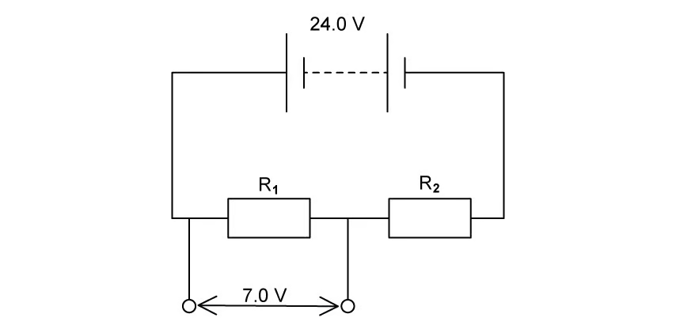
(a) When the resistance of \(R_1\) is 6.5 Ω, the voltage across it is 7.0 V.
Show that the resistance of \(R_2\) is 16 Ω. [2 marks]
The resistors are replaced with identical filament lamps A and B and the battery is connected in parallel to a linear potentiometer XY, as shown in Fig. 1.2.
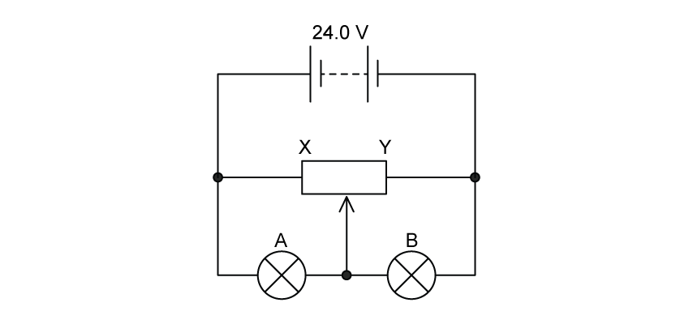
The lamps each have the same I–V characteristic shown in Fig. 1.3.
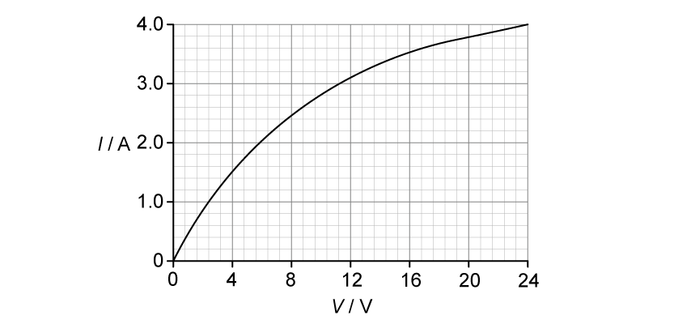
When the slider of the potentiometer is at its midpoint, as shown in Fig. 1.2, the current \(I\) in the battery is 4.12 A.
(b) Determine the current in lamp B. [1 mark]
(c) Calculate the total resistance in the circuit. [3 marks]
(d) The slider of the potentiometer in (c) is moved to end X.
State and explain the effect on the current of lamps A and B. [2 marks]
Show mark scheme / model answer
- (a) \(V_{\text{out}}=V_{\text{in}}\frac{R_1}{R_1+R_2}\).
[1]\(7.0=24.0\times\frac{6.5}{6.5+R_2}\), giving \(R_2=15.8\approx16\ \Omega\).[1] - (b) With the slider at the midpoint, each lamp has a p.d. of 12 V. From the graph, the current in lamp B is 3.10 A.
[1] - (c) Current through XY: \(I_{XY}=4.12-3.10=1.02\ \mathrm{A}\).
[1]\(R_{XY}=24.0/1.02=23.5\ \Omega\); each lamp has \(R=12/3.10=3.87\ \Omega\).[1]Combined resistance \(R_T=\frac{1}{\frac{1}{7.74}+\frac{1}{23.5}}=5.8\ \Omega\).[1] - (d) For lamp A, the p.d. decreases to zero, so its current is 0.
[1]For lamp B, the p.d. increases to 24.0 V, so its current is 4.0 A (read from the graph).[1]
[Total: 8 marks]
Chapter checklist
Original question PDFs
- 10.1 DC Practical Circuits & Kirchhoff’s Laws - MC Easy
- 10.1 DC Practical Circuits & Kirchhoff’s Laws - MC Medium
- 10.1 DC Practical Circuits & Kirchhoff’s Laws - MC Hard
- 10.1 DC Practical Circuits & Kirchhoff’s Laws - SQ Easy
- 10.1 DC Practical Circuits & Kirchhoff’s Laws - SQ Medium
- 10.2 DC Potential Dividers - MC Easy
- 10.2 DC Potential Dividers - MC Medium
- 10.2 DC Potential Dividers - MC Hard
- 10.2 DC Potential Dividers - SQ Easy
- 10.2 DC Potential Dividers - SQ Medium